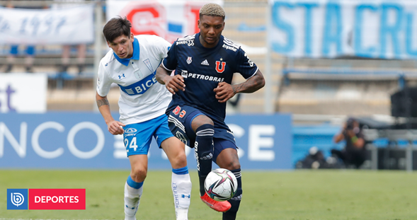
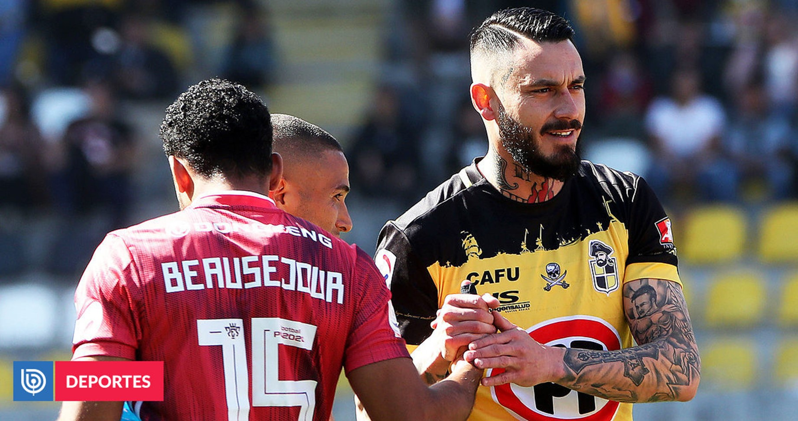

Suárez y eventual adiós de la Generación Dorada: "El público debe agradecerles, han hecho historia" |
|---|
| Categoria: Deportes |
 |
Pese a ser el autor de uno de los dos goles con que Uruguay derrotó a la Selección Chilena en San Carlos de Apoquindo, Luis Suárez lamentó que la Generación Dorada vuelva a quedarse fuera de un Mundial y señaló que, de igual forma, "el pueblo chileno debe estar agradecido". |
El clásico universitario se lleva todas las miradas: así se jugará la 8va fecha del torneo nacional |
|---|
| Categoria: Deportes |
|  |
La ANFP reveló la programación de la octava fecha del Campeonato Nacional 2022, donde destaca el clásico universitario entre la UC y la ‘U’ en el Estadio San Carlos de Apoquindo. El duelo más atractivo de la fecha se jugará en la precordillera el sábado 2 de abril desde las 18:00 horas. |
No lo dudaron: el candidato ideal de Beausejour y Pinilla para asumir como técnico de La Roja |
|---|
| Categoria: Deportes |
|  |
Tras la no clasificación de La Roja al Mundial de Catar 2022, ya comienzan a circular nombres del posible reemplazante de Martín Lasarte en la banca del ‘equipo de todos’. En medio de este reciente debate dos exseleccionados no lo dudaron y nombraron al que ellos creen como el candidato idóneo para asumir. |